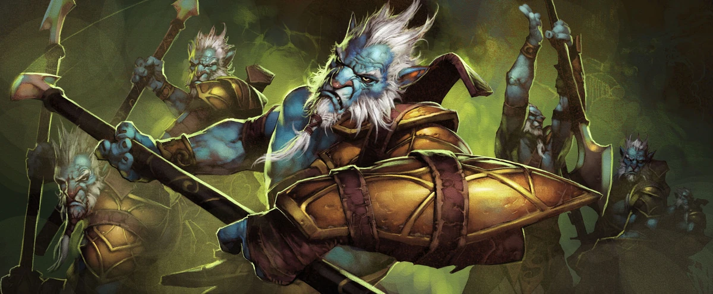
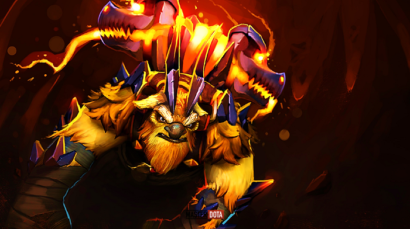
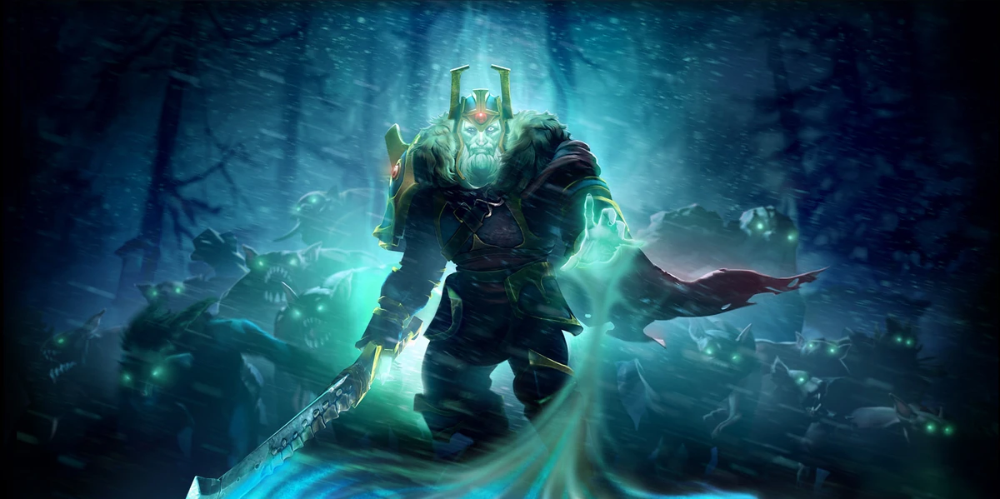

As Azwraith drove his pike through Vorn, the Dread Magus shattered into
innumerable
shards of light,
saturating his killer with a strange new power. Once a humble fisherman, the Phantom Lancer Spears
targets from afar, spawning a fragment of the Phantom Lancer himself as they Dash ahead while cutting
foes apart in a breathtaking flurry of attacks. When cornered, he vanishes briefly from the battlefield,
reappearing at a nearby spot while leaving behind Doppelgangers to mislead and elude pursuers. The sheer
number of his army are often Juxtaposed with his foes, overwhelming them before their eyes can scarcely
distinguish the Phantom Lancer from his army of clones.

Robbed of her wings and rightful place in the Ghastly Eyrie, Shendelzare appealed to
the
goddess Scree'auk to grant her the dark energies that would complete her vengeance. With a Wave of
Terror, the fallen princess heralds her arrival, unnerving foes close enough to hear her anguished cry.
Like her airborne brethren, the Vengeful Spirit makes liberal use of Magic Missle, a simple Skywrath
spell for stunning adversaries. Seeking martyrdom, Shendelzare instantly Displaces herself with a target
of her choosing, gladly sacrificing herself as she swaps positions with a besieged ally, or a fleeing
enemy. The worthy who fight alongside Shendelzare are emboldened by her Vengeance, a fanaticism that
intensifies their blows and persists even beyond her death, as the Vengeful Spirit's presence is felt at
all times.

Woken from the depth of the earth, Raigor Stonehoof shapes the battlefield with
seismic
force. With his long ranged Fissure, the Earthshaker creates impassable terrain where none existed
before. Never afraid to be outnumbered, the Earthshaker turns the tables with a grand Echo Slam,
demolishing entire armies in the process. Whatever survives his disruptive Aftershocks still has a
mighty swing to look forward to, an Enchanted Totem with the power that demolishes mountains.

Two hundred years of selective breeding had produced Nortrom, the prophesied war-mage
that would bring glory to the order of Aeol Drias. Therefore, disgust and disappointment followed when
it was found that the boy could cast not even a hex. Yet, on the day of final testing, Nortrom would
have the Last Word. His arranged opponents fell under an Arcane Curse, draining their health and
prolonging the curse with each incantation made. Then, there was Global Silence. Not a gasp or whisper
escaped their lips as Nortrom cut his challengers to ribbons with his multi-pronged Glaives, stealing
their intelligence to add to his own. At that moment, it became clear to all watching — The absence of
magic can be the greatest magic of all.
Shadow Shaman quickly clears the way for his team's forces to march on the enemy base.
Blasting enemies with Ether Shocks, interrupting attackers with Hexes, transforming his foe into a
chicken, while locking down another with magical Shackles — but not before conjuring up powerful Mass
Serpent Wards. Spitting fire in every direction, the Shadow Shaman's charmed snakes make short work of
his disabled enemies.
Muerta is a master of death who stalks the lands of life, corralling targets with
fearsome Trickshots from an eternity of practice that defies the mortal mind. Her family are forever
beyond the spirit veil, but her deal with Death allows her to briefly call on them — The Revenants — in
times of want or need to smother her foes. Always ready to pick off unwary targets with her Spare
Gunhand and Parting Shots, Muerta offers all of her victims Mercy, and some, are fortunate enough to
also earn Grace — one gun to deliver the soul, and the other, to claim the soul. Muerta is at her most
menacing when she sheds her corporeal form, Crossing the Veil of the Dead to strike her enemies with the
ethereal fury of the damned.
On the millennial solstice known as Wraith-Night, Ostarion stood frozen amid the
carnage, absorbing innumerable souls as his champions sacrificed their lives for the King. Now brimming
with Wraith Essence, Ostarion immobilizes his adversaries with Wraithfire Blast, stunning and searing
them over time. His great-sword smashes foes in one Mortal Strike, sapping their essence to feed his
Vampiric Spirit. Only fools trust the erratic reports of Ostarion's death. For when slain, the wraith
energies that bind his body begin to reconstitute his parts, joining limb to torso until the Wraith
King's Reincarnation comes full circle as his strides fearlessly towards his enemies, again.
